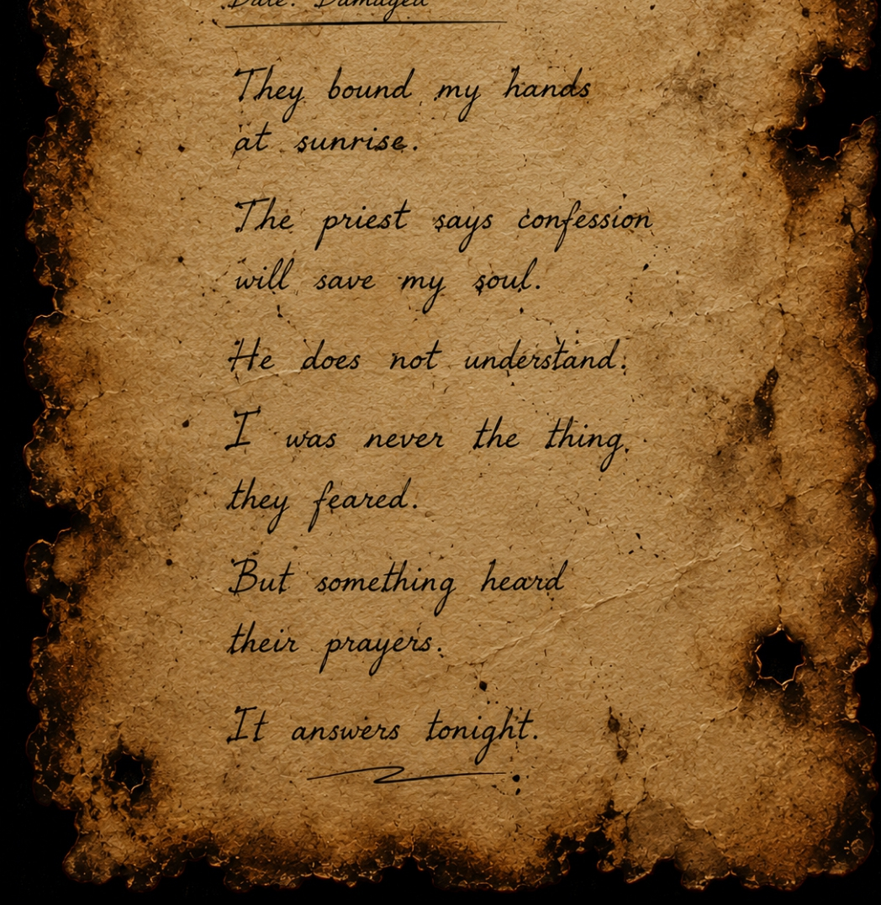

Fear, superstition, and the cost of suspicion.
Long before the great witch trials, many cultures believed certain individuals could communicate with spirits, heal the sick, or influence nature through mysterious means. Some were respected. Others were feared.
Between the fifteenth and eighteenth centuries, fear of witchcraft spread across parts of Europe and beyond. Disease, famine, and conflict created an atmosphere where suspicion flourished.
Thousands of people were accused of crimes they could never truly defend against. Rumors often became evidence, and fear became its own form of proof.

The witch hunts reveal how fear can spread through a society and transform ordinary suspicion into widespread panic.
Over time, the image of the witch evolved. Modern stories often portray witches as wise scholars, powerful spellcasters, guardians of hidden knowledge, or misunderstood outsiders.
Today they remain one of fantasy's most enduring figures, appearing in books, films, games, and folklore across the world.